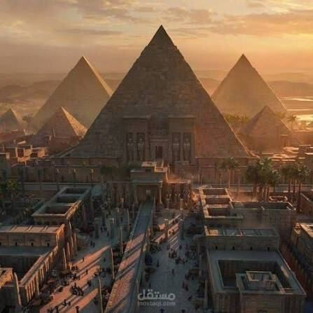
A permanent exhibition · est. 3100 BCE — 1912 CE
Three rivers. Three empires. Three ways humanity first learned to build, write, worship, and rule. Walk the Nile, the Tigris & Euphrates, and the Yellow River — the water that wrote history.
Begin the walkthroughGift of the Nile
Every summer the Nile flooded its banks and left behind a strip of black, fertile silt. That single, predictable event made Egypt possible: farmers could grow surplus grain in a strip of desert, surplus grain fed cities, and cities fed the idea of a single ruler who controlled the water's gift. The Egyptians called their own land Kemet, "the Black Land," named for that soil — and the surrounding desert Deshret, "the Red Land."
Around 3100 BCE, King Narmer united the farming villages of Upper and Lower Egypt into one kingdom, wearing the White and Red crowns together for the first time. What followed was one of the longest continuous civilizations in history — over three thousand years under more than 170 pharaohs, from the first pyramids at Saqqara to Cleopatra VII, the last of the Ptolemies.
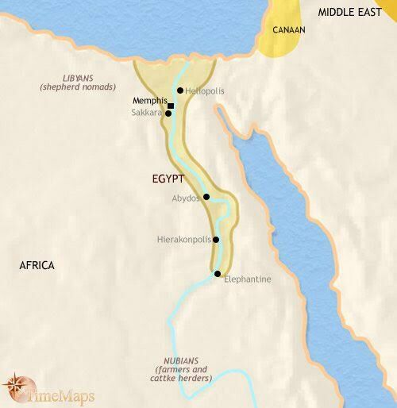
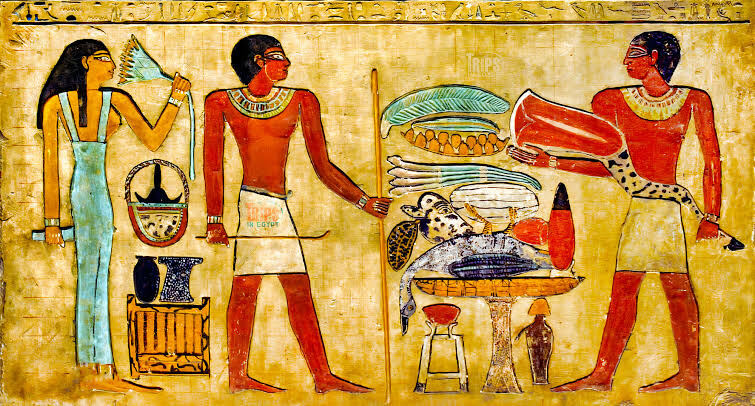
The Egyptians developed hieroglyphs — picture-signs that could spell sounds, words, or ideas — as early as 3200 BCE, one of the first writing systems on Earth. Priests used it to record religious ritual and the deeds of kings; scribes used a faster cursive form, hieratic, for everyday business and letters. Almost everything the Egyptians built was aimed at the same target: surviving death. Tomb walls were painted with food, servants, and possessions so the dead would want for nothing in the next life, and the body itself was preserved through mummification so the soul, or ka, would recognize its own form and return to it.
The Great Pyramid of Giza, built for the pharaoh Khufu around 2560 BCE, was the tallest human-made structure on Earth for almost 3,800 years. It was raised without iron tools, wheels, or writing systems as advanced as we now take for granted — using ramps, sledges, copper chisels, and a labor force of skilled, paid workers, not the slave armies of popular myth. Pharaohs were considered living gods, intermediaries between the people of Egypt and deities like Ra, Osiris, and Isis, and their tombs were built to match that status.
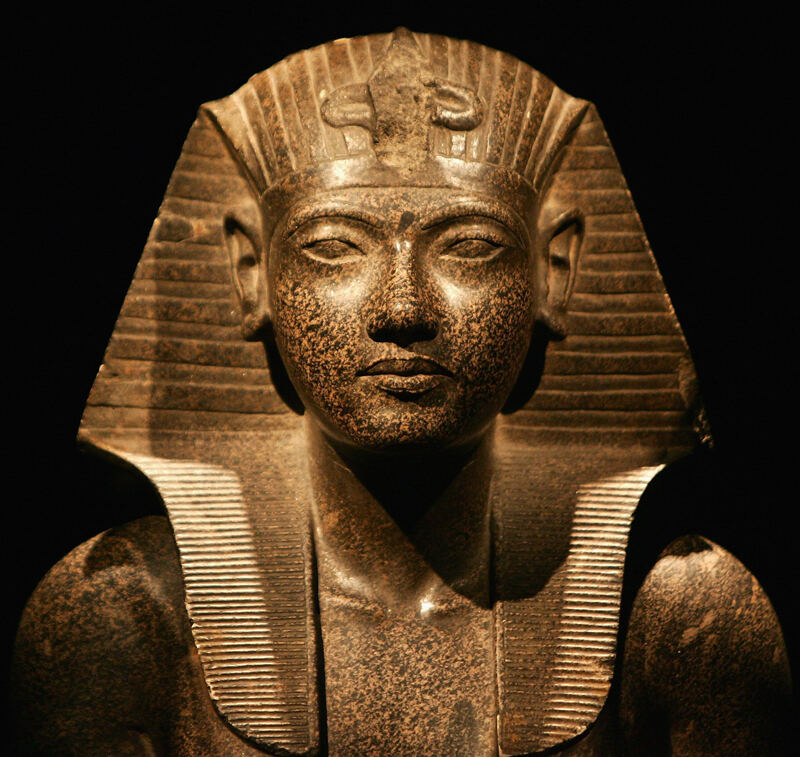
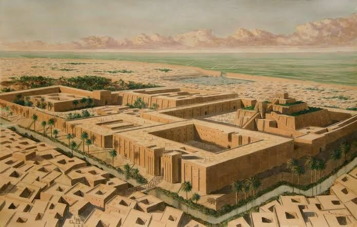
Land Between the Rivers
Mesopotamia — Greek for "between the rivers" — was fed by the Tigris and Euphrates, but unlike the gentle, predictable Nile, these rivers flooded violently and unpredictably. Taming them demanded irrigation canals, which demanded organized labor, which demanded government. Out of that need grew the Sumerians' city-states around 3500 BCE: Uruk, Ur, Eridu, and Lagash — the first true cities in human history, each with its own king, temple, and army.
Sumer was later folded into a succession of empires that ruled the same land — Akkadian, Babylonian, and Assyrian — each borrowing and rebuilding on what came before. This is why Mesopotamia is often called the cradle of civilization: nearly every "first" in urban life happened here first.
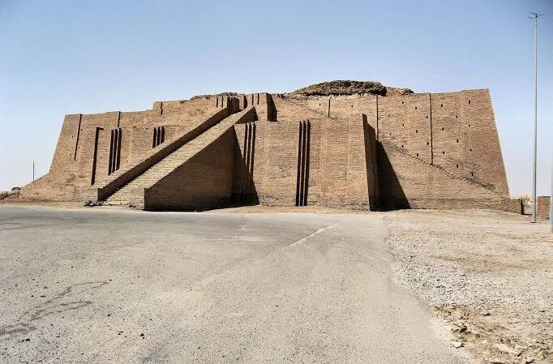
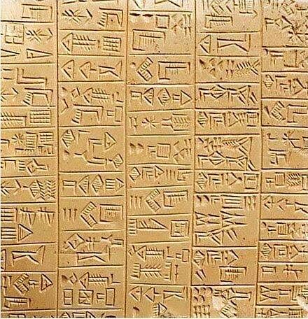
Around 3200 BCE, Sumerian accountants pressed reed styluses into wet clay to track grain, livestock, and taxes — and in doing so invented cuneiform, the first writing system anyone has found. It began as pictures and evolved into hundreds of wedge-shaped signs standing for sounds and syllables. Clay tablets baked in the sun or in kilns survive by the hundreds of thousands, recording everything from royal proclamations to a student's homework and a shopkeeper's complaint about bad-quality copper.
The Babylonians used the same base-60 number system we still use for minutes, hours, and the 360 degrees of a circle, and their astronomers charted planetary motion centuries before the Greeks. Hammurabi's Code, carved into a stone stele around 1754 BCE, is one of the earliest surviving law codes: 282 rulings on everything from wages to the responsibilities of a doctor.
Mesopotamian kings claimed authority granted directly by the gods, and stone reliefs across the region show rulers in audience, receiving offerings, or commanding armies — carved records meant to project power for as long as the stone survived. The Assyrian Empire, the region's most militarily dominant phase, stretched from the Persian Gulf to Egypt at its height around 670 BCE, administered through provinces, relay messengers, and one of the first professional standing armies in history.
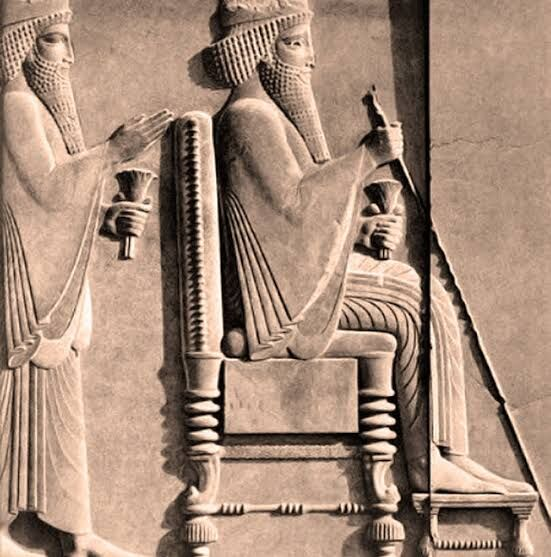
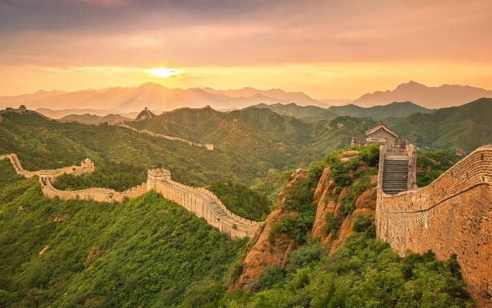
The Mandate of Heaven
Chinese civilization grew up along the Yellow River, whose fine, fertile silt — and famously destructive floods — earned it the nickname "China's Sorrow." Tradition holds that the Xia Dynasty rose here around 2070 BCE, followed by the Shang, who left behind the first confirmed Chinese writing: questions scratched onto ox bones and turtle shells and read by cracking them over fire, a practice called oracle bone divination.
Unlike Egypt or Mesopotamia, ancient China's story continued almost unbroken for thousands of years, passed from dynasty to dynasty under a single idea: the Mandate of Heaven — the belief that a just ruler governed with heaven's blessing, and a corrupt one could rightfully be overthrown. It explained, and justified, every change of dynasty that followed.
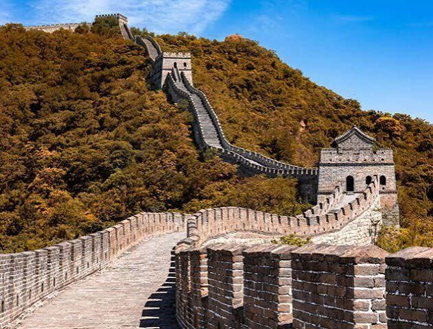
In 221 BCE, Qin Shi Huang conquered the last rival kingdoms and declared himself the First Emperor, unifying China's writing script, currency, weights, and even the axle width of carts. He connected and extended older border walls into what became the Great Wall, a defense line eventually stretching more than 13,000 miles under later dynasties, and was buried with an army of over 8,000 life-sized terracotta soldiers to guard him in the afterlife.
The Han Dynasty that followed opened the Silk Road, trading silk, tea, and porcelain as far as Rome, while Chinese scholars and craftspeople developed paper, the compass, and — centuries later — gunpowder and woodblock printing: four inventions still called China's "Great Inventions."
Philosophy shaped Chinese civilization as much as any emperor. Confucius (551–479 BCE) taught that social harmony came from respect between ruler and subject, parent and child, husband and wife — a code of conduct that guided Chinese government and family life for two thousand years. Daoism, by contrast, urged living in balance with nature's flow. Grand palaces like the Forbidden City, built centuries later, still reflect Confucian ideas of hierarchy and cosmic order in their very floor plan — the emperor's throne aligned to the exact center of the city, and the city, in theory, to the center of the world.
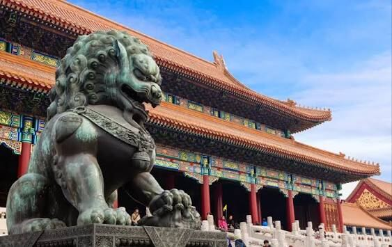
Before you go
Egypt, Mesopotamia, and China never met, yet each one followed the same river-born logic: fertile floodwater built farming surplus, surplus built cities, cities needed record-keeping and law, and record-keeping demanded writing. Civilization, it turns out, is what a great river leaves behind.
| Compare | Egypt | Mesopotamia | China |
|---|---|---|---|
| Lifeline river | Nile | Tigris & Euphrates | Yellow & Yangtze |
| Writing system | Hieroglyphs | Cuneiform | Oracle bone script |
| Political form | Unified kingdom, one pharaoh | Rival city-states & empires | Dynasties, one Mandate of Heaven |
| Signature structure | Pyramids of Giza | Ziggurats | The Great Wall |
| Lasting legacy | Monumental architecture, calendar | Law codes, the wheel, base-60 math | Paper, the compass, gunpowder, printing |